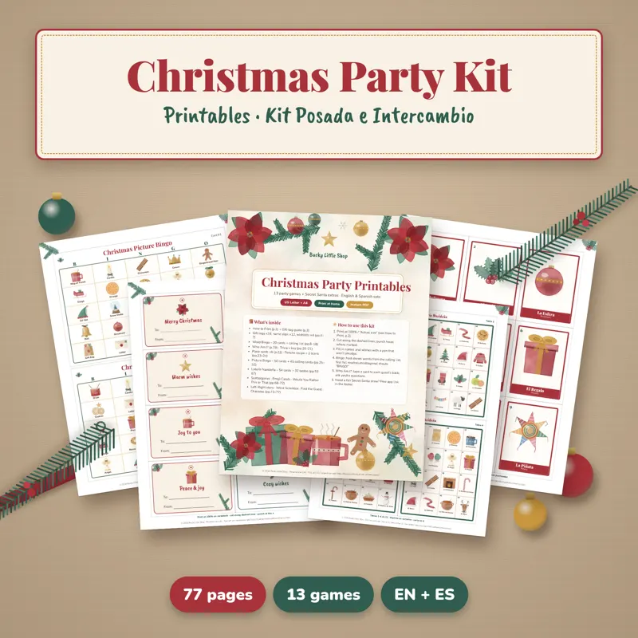
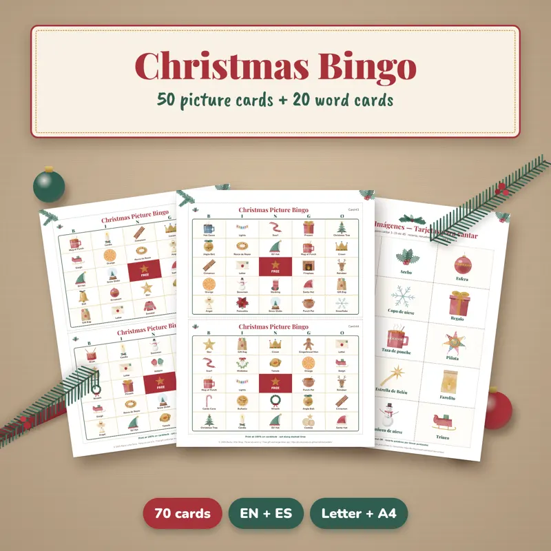
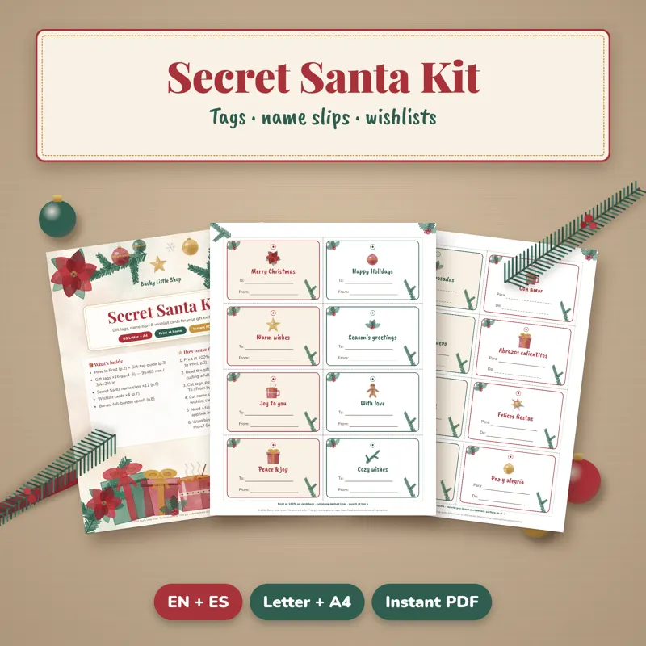

Inicio › Letra para pedir posada
Letra para pedir posada (completa y para imprimir)
La letra tradicional para pedir posada, con los versos de afuera y de adentro, lista para imprimir y repartir. Abajo encuentras juegos imprimibles para seguir la fiesta.
Hoja de la letanía GRATIS en PDF
2 páginas con colores para Afuera, Adentro y Todos, en letra grande para leer con velitas. Sin registro.
Letra para pedir posada (versión tradicional)
Los peregrinos cantan desde afuera y los posaderos responden desde adentro. Se canta verso por verso.
En el nombre del cielo
os pido posada,
pues no puede andar
mi esposa amada.
Aquí no es mesón,
sigan adelante,
yo no puedo abrir,
no sea algún tunante.
No seas inhumano,
tennos caridad,
que el Dios de los cielos
te lo premiará.
Ya se pueden ir
y no molestar,
porque si me enfado
los voy a apalear.
Venimos rendidos
desde Nazaret,
yo soy carpintero
de nombre José.
No me importa el nombre,
déjenme dormir,
pues que yo les digo
que no hemos de abrir.
Posada te pide,
amado casero,
por solo una noche
la Reina del Cielo.
Pues si es una reina
quien lo solicita,
¿cómo es que de noche
anda tan solita?
Mi esposa es María,
es Reina del Cielo,
y madre va a ser
del Divino Verbo.
¿Eres tú, José?
¿Tu esposa es María?
Entren, peregrinos,
no los conocía.
Dios pague, señores,
vuestra caridad,
y que os colme el cielo
de felicidad.
¡Entren, santos peregrinos, peregrinos,
reciban este rincón,
que aunque es pobre la morada, la morada,
os la doy de corazón!
Letra tradicional mexicana (dominio público). Existen variantes regionales; esta es una de las más cantadas.
Cómo pedir posada paso a paso
- Divide a los invitados: un grupo afuera (peregrinos, con velitas) y otro adentro (posaderos).
- Reparte la letra impresa para que todos canten.
- Canten verso por verso, alternando afuera y adentro.
- Con el último verso se abre la puerta y todos entran cantando.
- Sigue la fiesta: piñata, ponche, tamales y juegos. Mira nuestra guía de juegos para posada.
Imprimibles listos para descargar
Combo Posada + Agenda 2027
Kit de posada e intercambio + Agenda 2027 + letanía de regalo. 40 % menos que por separado.
$14.49 USD Comprar / BuyPagar con Payhip / Mercado PagoCompartir por WhatsApp / ShareJuegos para posada y fiesta navideña
Juegos imprimibles para posadas, oficina o familia.
$9.99 USD Comprar / BuyPagar con Payhip / Mercado PagoCompartir por WhatsApp / Share
Paquete fiesta navideña (completo)
Juegos, intercambio y decoración al mejor precio.
$15.99 USD Comprar / BuyPagar con Payhip / Mercado PagoCompartir por WhatsApp / Share
Lotería / Bingo navideño
Cartones con dibujos para niños y adultos.
$5.99 USD Comprar / BuyPagar con Payhip / Mercado PagoCompartir por WhatsApp / Share
Kit de intercambio de regalos
Tarjetas, listas de deseos y etiquetas.
$6.99 USD Comprar / BuyPagar con Payhip / Mercado PagoCompartir por WhatsApp / SharePreguntas frecuentes
¿Cuándo se pide posada?
En las posadas, del 16 al 24 de diciembre, normalmente al inicio de la fiesta y antes de la piñata.
¿Quién canta cada parte?
Los peregrinos (afuera, con velitas) piden posada y los posaderos (adentro) responden. Al final todos cantan juntos “Entren, santos peregrinos”.
¿Puedo imprimir la letra?
Sí. Descarga la hoja en PDF (carta o A4) o usa el botón “Imprimir la letra”.
¿La letra es la misma en todo México?
Hay variantes regionales en algunos versos; aquí está una de las versiones tradicionales más cantadas.
Las Posadas song lyrics (English)
These are the traditional Spanish lyrics for pedir posada, the call-and-response song of Mexico's Las Posadas (Dec 16–24). Pilgrims sing outside and innkeepers answer from inside, and everyone sings together when the door opens. Print them for your Spanish class or family celebration, and see our bilingual Christmas party games below.